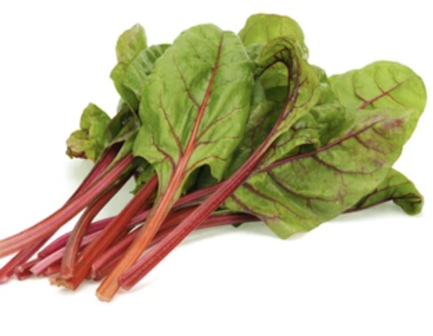

SELECT CROP TYPE
Selecting crop type for vertical farming is the crucial thing.
Please make sure that you select appropriate crop type.
 Lettuce
LettuceChard
Cabbage
Mint
Basil
Selecting crop type for vertical farming is the crucial thing.
Please make sure that you select appropriate crop type.
Lettuce